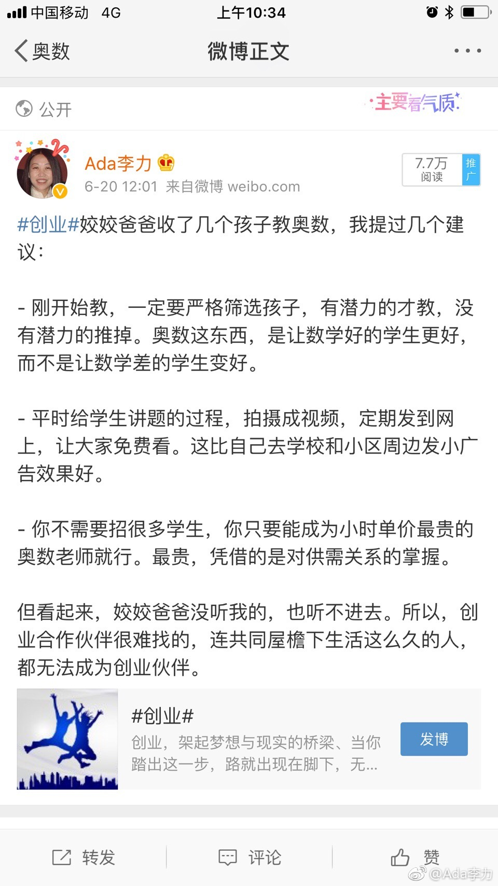
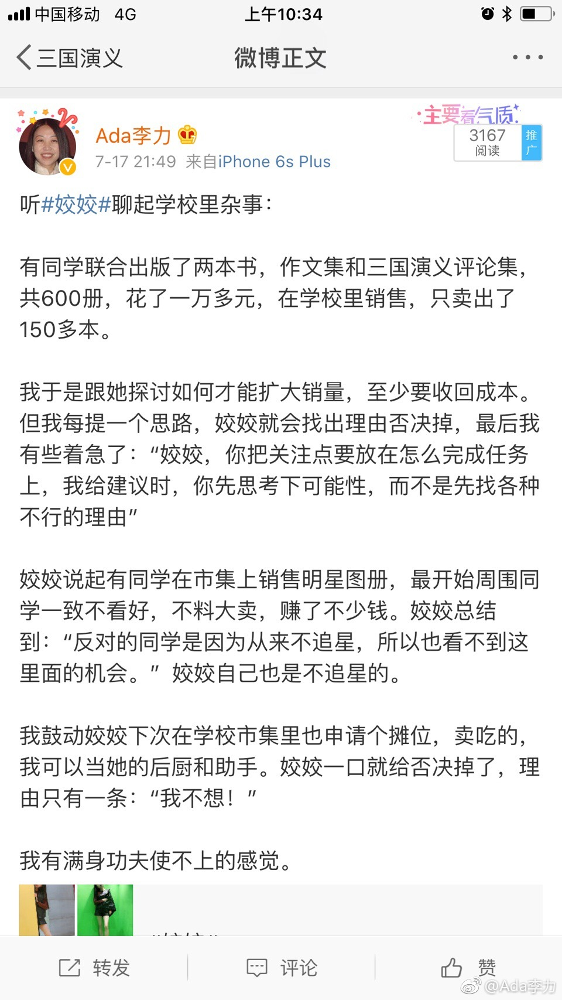

#创业#是不能做军师的，如果你认为某个方向对，就自己去把它做出来。而不要期望别人能听进去，别人把它做出来。
我给姣姣和姣姣爸爸提建议，都会被忽视，何况别人？
另外即使是别人听了你的建议做成了，也不会把这功劳归接到你头上，一定是认为是自己强的缘故。talk is cheap嘛。但是你的建议如果被别人验证错的话，SB的帽子就摘不掉了。
给不相关人提建议是非常非常愚蠢的行为。给自己再次提个醒。
我给姣姣和姣姣爸爸提建议，都会被忽视，何况别人？
另外即使是别人听了你的建议做成了，也不会把这功劳归接到你头上，一定是认为是自己强的缘故。talk is cheap嘛。但是你的建议如果被别人验证错的话，SB的帽子就摘不掉了。
给不相关人提建议是非常非常愚蠢的行为。给自己再次提个醒。
- 
- 